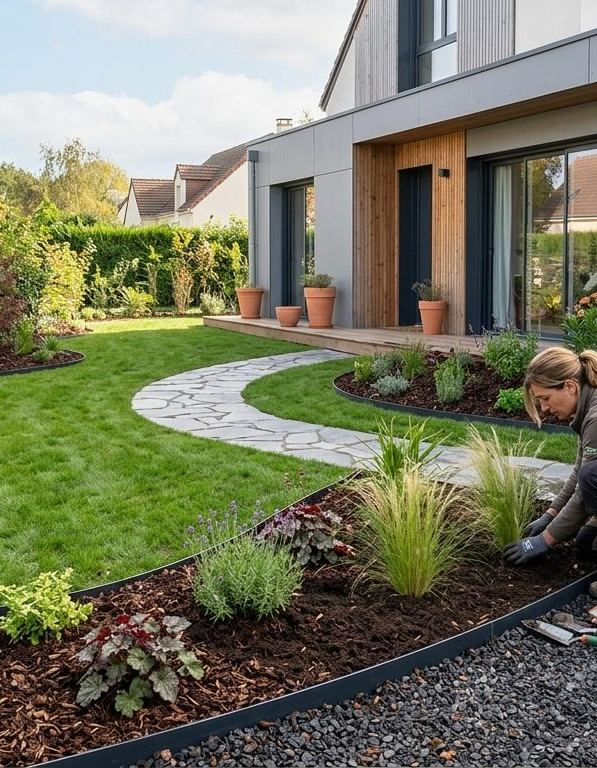
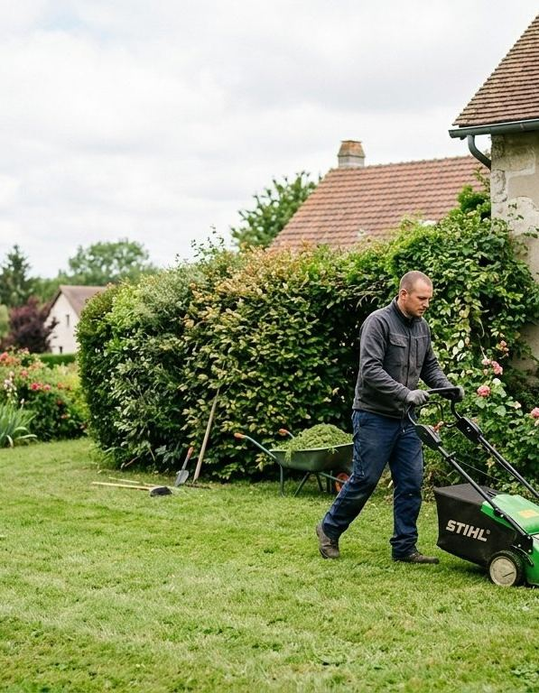
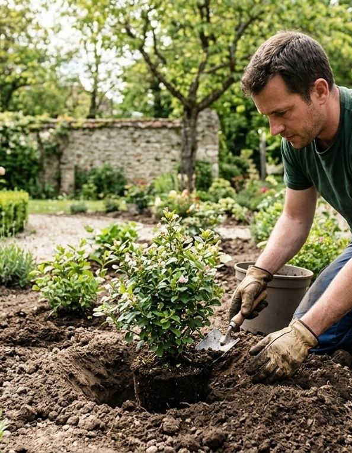
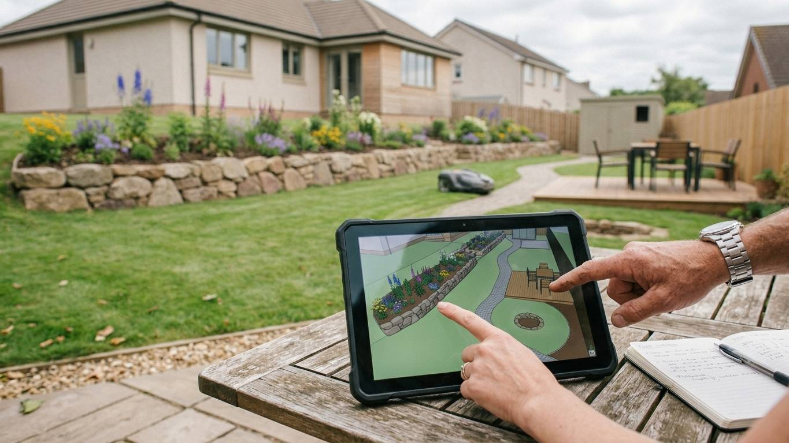

Dirigeant
Entreprise dirigée par Mickael Lapalut, à Forges-les-Bains.
Paysagiste à Forges-les-Bains (91)
Branche et Nature crée, entretient et aménage vos espaces verts à Forges-les-Bains et dans les environs, avec un seul interlocuteur.



À propos
Quelques repères sur l’entreprise de Mickael Lapalut.
Entreprise dirigée par Mickael Lapalut, à Forges-les-Bains.
Services d’aménagement paysager : conception, plantation et entretien d’espaces verts.
Basée à Forges-les-Bains, en Essonne (91).
Notre façon de travailler
Chaque espace vert demande une approche adaptée.
Vous décrivez votre terrain et vos besoins.
Nous vous conseillons sur les travaux à prévoir.
Les travaux sont réalisés avec soin.
Un suivi régulier de votre espace vert.

Contact
Appelez-nous ou demandez un devis en ligne.